As nossas Aulas!
Cada aula tem como conteúdo o ensino e a prática de um a dois movimentos em combinação com uma capacidade física. Isto garante que as aulas sejam diferentes entre si, não só em relação às atividades escolhidas, mas também quanto às actividades escolhidas, mas também quanto às exigências cardiometabólicas. A duração é de 45 minutos.

NeuroFitness
O NeuroFitness e a Neuróbica definem-se pela prática de
exercícios mentais que
permitem quebrar rotinas e ativar funções do cérebro de modo a regenerar células neuronais e criar
novas ligações
entre os neurónios. As recentes descobertas em neurociências sobre a neurogénese e a plasticidade
cerebral constatam.

Pilates
O método pilates foi criado por Joseph Pilates e teve
influencia
inicialmente das artes marciais, yoga e o estudo dos animais obedecendo sempre seis principios:
concentração, fluidez, controle, centralização de força, precisão e respiração.
Os beneficios que o pilates pode trazer para as crianças:
Proteção do sistema locomotor
Melhora a postura
Sono tranquilo
Alongamento
Fortalecimento muscular
concentração, fluidez, controle, centralização de força, precisão e respiração.
Os beneficios que o pilates pode trazer para as crianças:
Funcional
O conceito de Treinamento Funcional é bastante amplo. Na
ultima década,
o termo vem se popularizando trazendo a idea de uma modalidade que trabalha o corpo de forma
integrada,
melhora performance, evita lesões e possibilita uma atividade física mais motivadora para muitos.
Zumba
Se existe uma atividade na moda é a tal da zumba. Este
processo que
mistura o esporte com a dança serve para muitas pessoas se manterem em forma e para poder melhorar a
forma física
ao mesmo tempo em que se divertem ao máximo.
Mas, o que é Zumba?
Trata-se de um tipo de esporte que combina o fitness com a música, o que ajuda ainda mais a manter o corpo em forma e conseguir maior flexibilidade enquanto se dança ao ritmo de músicas mais agitadas.
Mas, o que é Zumba?
Trata-se de um tipo de esporte que combina o fitness com a música, o que ajuda ainda mais a manter o corpo em forma e conseguir maior flexibilidade enquanto se dança ao ritmo de músicas mais agitadas.
Cycling
Tendo em conta o crescimento da população de crianças obesas
e consequentemente
de adultos obesos, vemos a necessidade da integração de actividades de alta intensidade intervalada
como essencial
para a complementação física das nossas crianças.
O cycling possui as seguintes características:é um exercício físico perfeitamente aplicável a crianças e adolescentes;
Um dos métodos mais utilizados para medir o nível de obesidade;
melhoria na condição cardiorrespiratória.
 Vemos que mesmo um pequeno espaço de tempo, a combinação cycling, reeducação alimentar e alongamento
se mostrou
benéfica no combate à obesidade infatil.
Vemos que mesmo um pequeno espaço de tempo, a combinação cycling, reeducação alimentar e alongamento
se mostrou
benéfica no combate à obesidade infatil.
O cycling possui as seguintes características:

Cardio
Este tipo de trabalho incentiva e melhora o rendimento de um
grande músculo
que é o nosso coração! Resulta do trabalho produzido em aparelhos próprios, denominados de
ergómetros ou noutros,
simulando diferentes padrões de movimento, de trabalho.
Com este tipo de treino sentimo-nos mais leves, com boa disposição, e com melhor capacidade cardiovascular.
Com este tipo de treino sentimo-nos mais leves, com boa disposição, e com melhor capacidade cardiovascular.